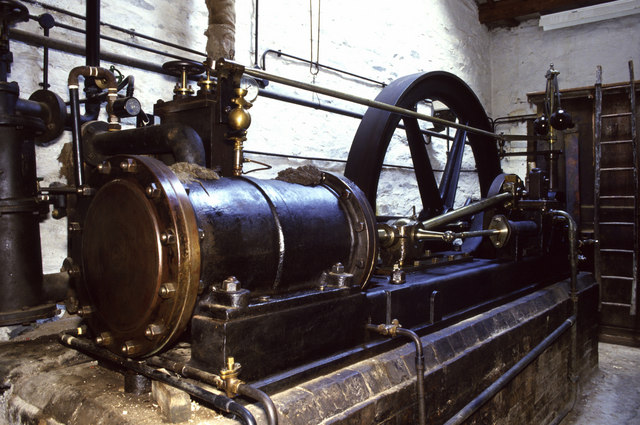
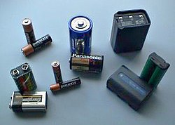
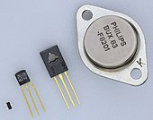
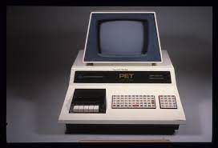
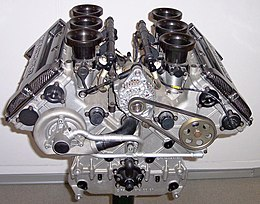
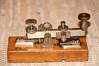
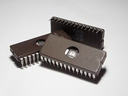

The top ten inventions. I think that recent inventions have not been quite as life changing so let's take a look at the best inventions.
My list is based off of how much the invention has changed the world
- 
steam engines
- It allowed for the automation of a lot of tasks
- It was the basis for the modern engine
- 
batteries
- Was how electricity was first discovered
- Allows for portable electronics
- 
transistors
- The basis for modern computers
- Allows switching electric signals
- 
computers
- Allows extremely quick calculations
- Allows for lots of entertainment
- 
combustion engines
- More power then a steam engine
- Runs faster then steam engines
- 
telegraphs
- Allowed for extremely fast communication
- Made more people able to send messages over long distances
- 
integrated circuits
- Made circuits much smaller
- Made circuits much cheaper to make
aircraft
- Allowed for faster movement of people over longer distances
- Allowed for faster movment of objects over longer distances
cars
- Made moving personal cargo easy
- Made it easier to go long distances
paper
- Let knowledge be kept much more efficiently
- Let knowledge be kept much cheaper
This is my opinion on how much inventions changed the world and I did not do research so you get a link to this website's drive.